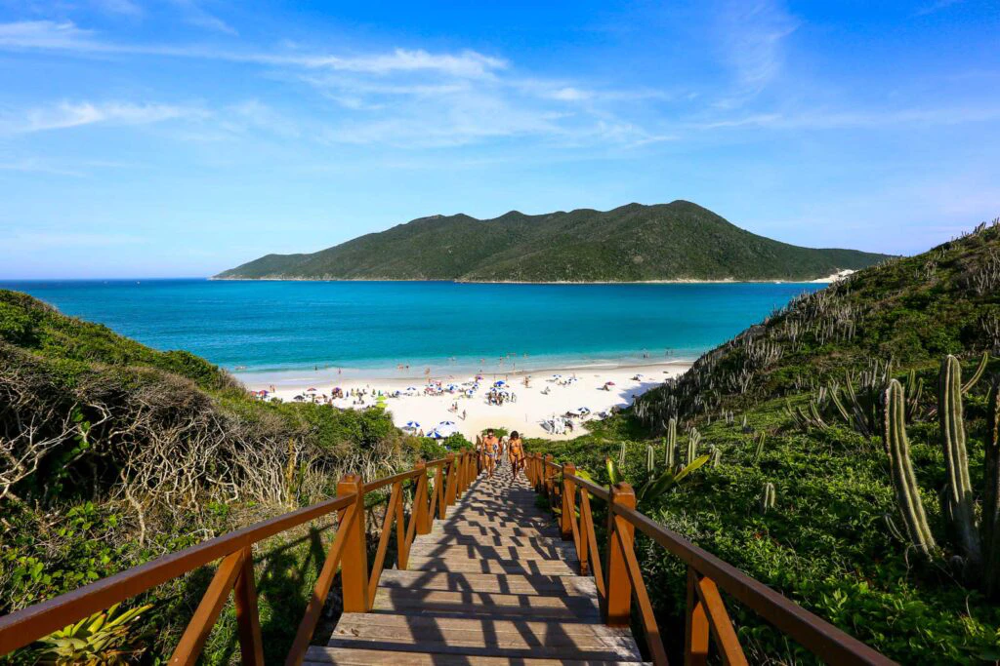
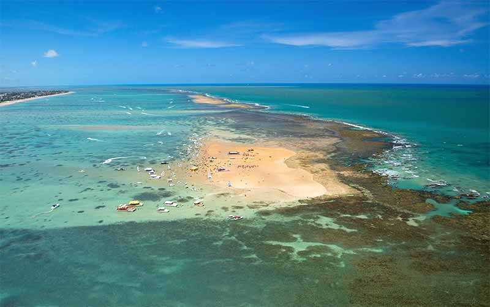
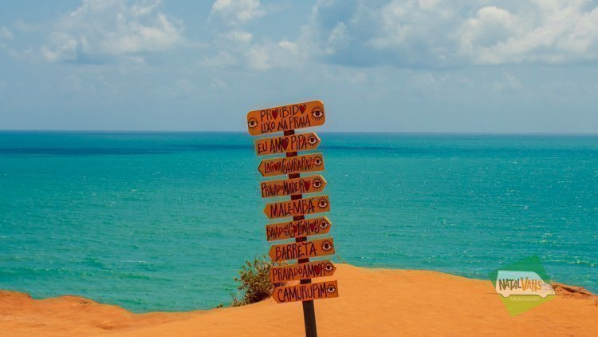
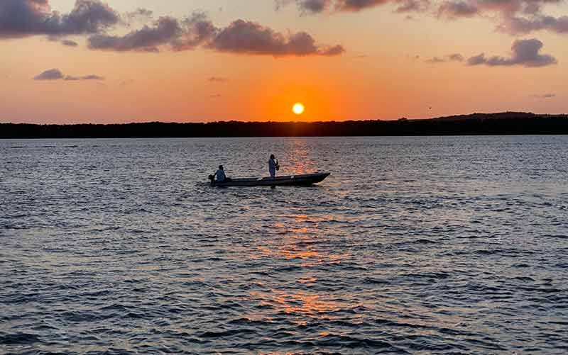
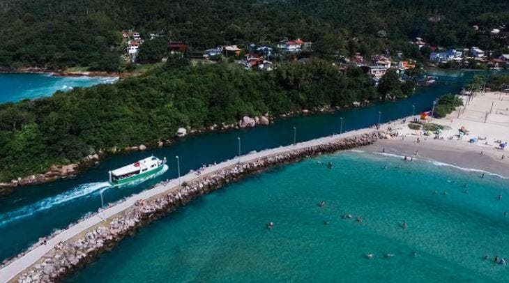
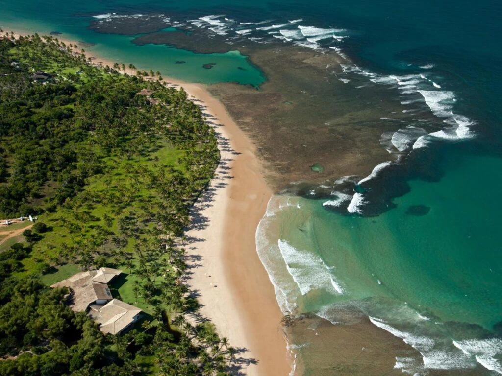
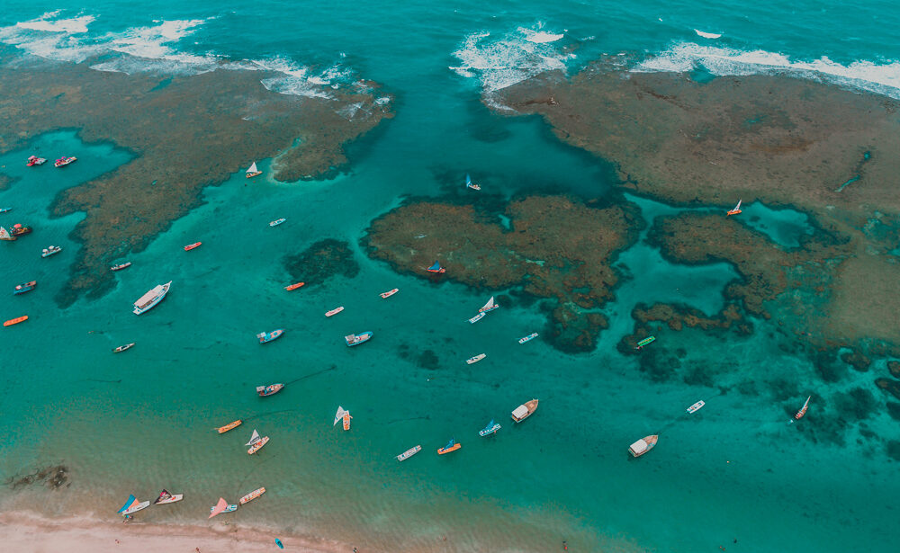
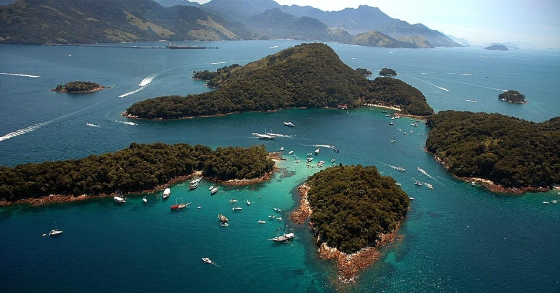
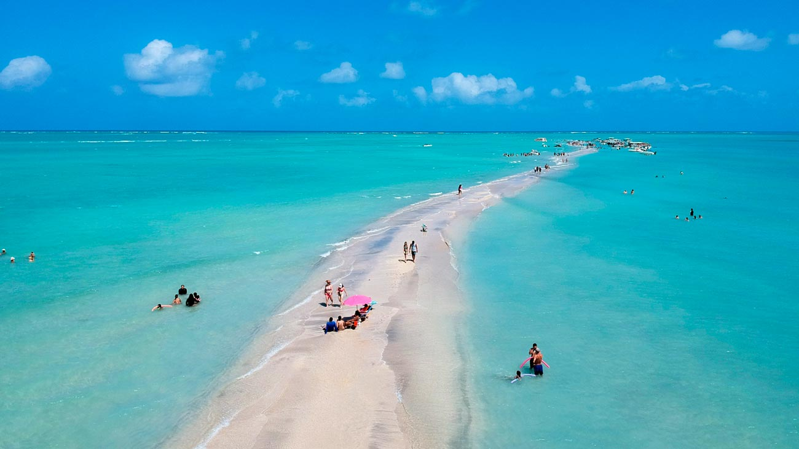
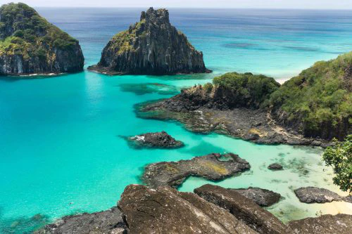

Arraial do Cabo
A praia de Arraial do Cabo, localizada no estado do Rio de Janeiro, é famosa por suas águas cristalinas e tranquilas, ideais para mergulho. A principal atração é a vida marinha abundante, que inclui peixes, tartarugas e até golfinhos, tornando-a um paraíso para os amantes do mergulho. Caracteriza-se também pela areia branca e fina, além de belos mirantes naturais que proporcionam vistas deslumbrantes do litoral.

Areia Vermelha
Areia Vermelha, situada em João Pessoa, Paraíba, é uma praia única que se forma durante a maré baixa, revelando piscinas naturais de águas calmas . A principal atração é a oportunidade de snorkeling em águas claras, onde é possível observar uma rica diversidade de vida marinha. A praia é conhecida pela formação de bancos de areia que emergem do mar, criando um ambiente ideal para relaxar e explorar a fauna aquática.

Pipa
Pipa, no Rio Grande do Norte, é uma praia conhecida por suas águas agitadas, falésias impressionantes e pela presença frequente de golfinhos. A principal atração é a observação de golfinhos, especialmente na Baía dos Golfinhos. Pipa também é famosa por sua vida noturna vibrante e por ser um destino popular para surfistas devido às suas ondas constantes. O charme adicional vem das trilhas ecológicas e das vistas panorâmicas das falésias.

Praia do Jacaré
A Praia do Jacaré, também em João Pessoa, Paraíba, é famosa por seu pôr do sol ao som do Bolero de Ravel, que é tocado diariamente por músicos locais. Com suas águas calmas, a principal atração é este espetáculo natural, que atrai turistas para as margens do rio. A praia também é caracterizada pelas barracas à beira-mar que oferecem petiscos regionais e pelos passeios de barco que permitem apreciar a beleza do lugar.

Barra da Lagoa
Barra da Lagoa, localizada em Florianópolis, Santa Catarina, é uma praia calma e familiar. A principal atração é o Canal da Barra, que conecta a Lagoa da Conceição ao mar, ideal para natação e passeios de barco. A praia se destaca por suas trilhas e mirantes que oferecem vistas deslumbrantes da região, além de um ambiente acolhedor com restaurantes e bares que servem frutos do mar frescos.

Taipus de fora
Taipus de Fora, situada na Península de Maraú, Bahia, é conhecida por suas águas calmas e piscinas naturais que se formam entre os recifes de corais. A principal atração é o snorkeling nas águas cristalinas, onde é possível observar uma rica vida marinha. A praia é caracterizada pela longa faixa de areia dourada e pelo ambiente tranquilo, ideal para quem busca relaxar em um cenário paradisíaco.

Porto de Galinhas
Porto de Galinhas, localizada em Pernambuco, é famosa por suas piscinas naturais formadas por arrecifes de corais e suas águas mornas e calmas. A principal atração são os passeios de jangada, que levam os visitantes para observar peixes coloridos nas piscinas naturais. A praia também é conhecida pela sua vida marinha abundante e pelas lojinhas de artesanato local, que adicionam um charme especial ao destino.

Paraty
Paraty, no Rio de Janeiro, é uma praia encantadora que combina belezas naturais com um rico patrimônio histórico. A principal atração é o centro histórico, com suas ruas de pedra e arquitetura colonial bem preservada, além das ilhas paradisíacas ao redor. Paraty é caracterizada pela sua atmosfera acolhedora, ideal para caminhadas e ecoturismo, e pelas suas águas calmas, perfeitas para passeios de barco e caiaque.

Maragogi
Maragogi, em Alagoas, é conhecida como o Caribe Brasileiro devido às suas águas cristalinas e piscinas naturais chamadas Galés. A principal atração é o mergulho e o snorkeling nessas piscinas naturais, onde se pode observar uma rica diversidade de vida marinha. Maragogi se destaca pela tranquilidade de suas praias e pela beleza cênica dos recifes de corais, que oferecem uma experiência inesquecível para os visitantes.

Fernando de Noronha
Fernando de Noronha, um arquipélago de Pernambuco, é um destino paradisíaco conhecido por suas praias deslumbrantes e vida marinha diversificada. Com praias tanto calmas quanto agitadas, a principal atração é o mergulho, considerado um dos melhores do mundo. Fernando de Noronha é caracterizado por sua rigorosa conservação ambiental, que mantém as praias intocadas, e pela possibilidade de avistar golfinhos, tartarugas e diversos peixes coloridos em seu habitat natural.